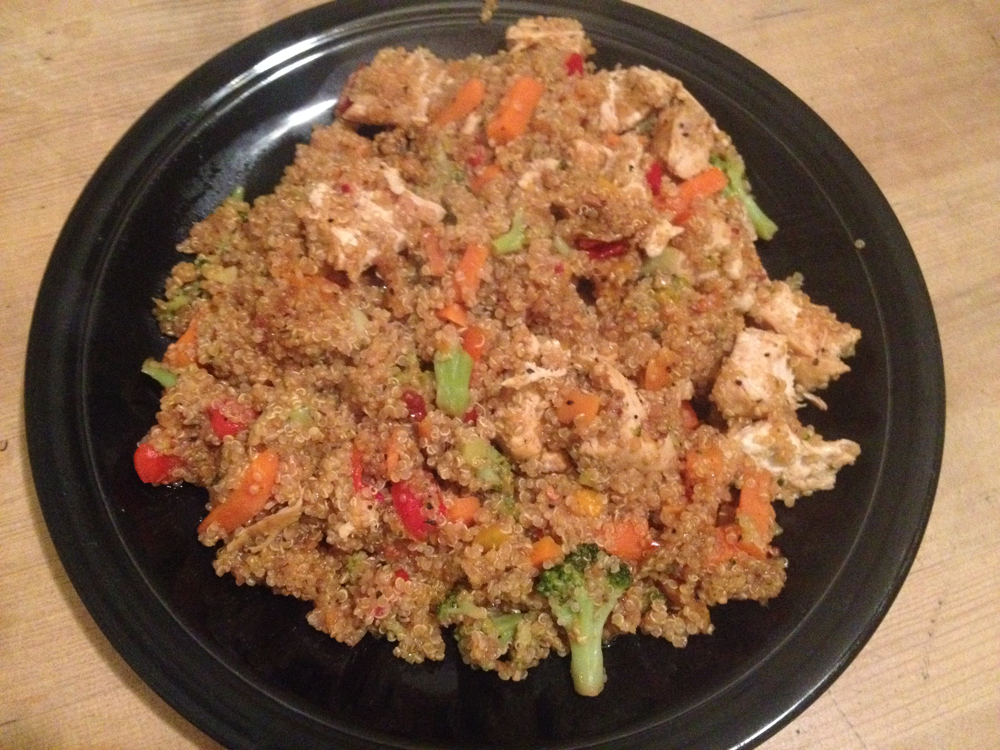
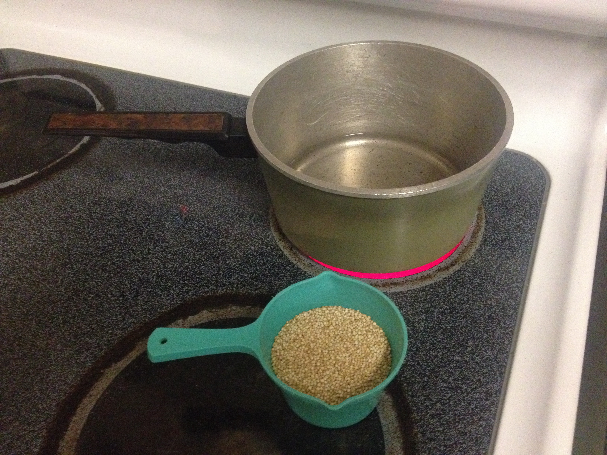
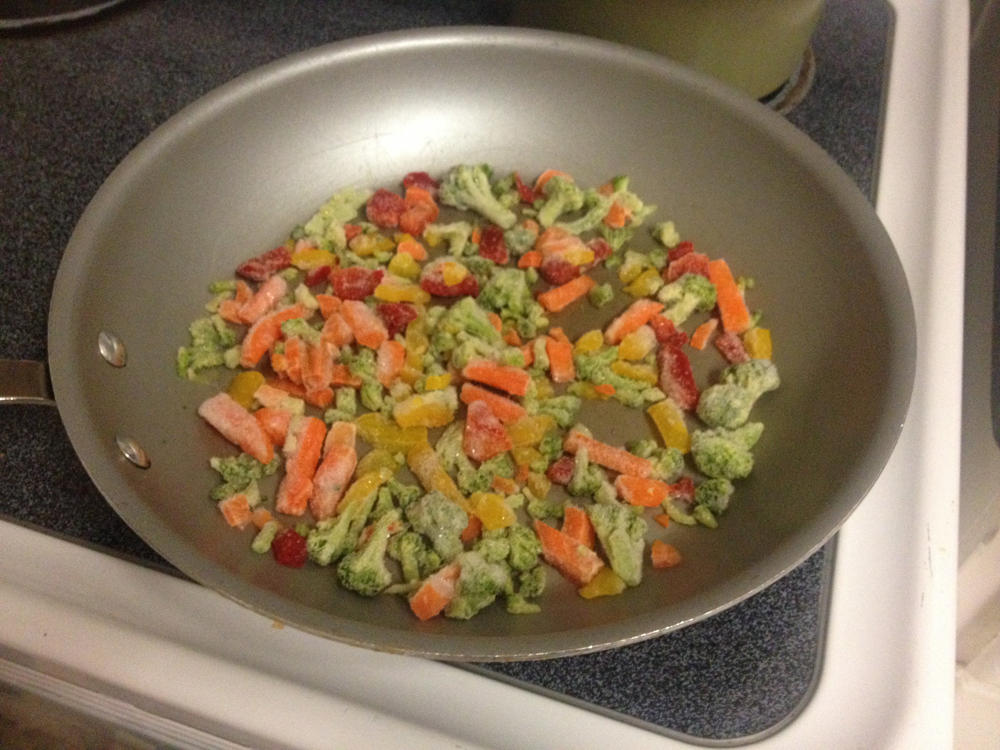
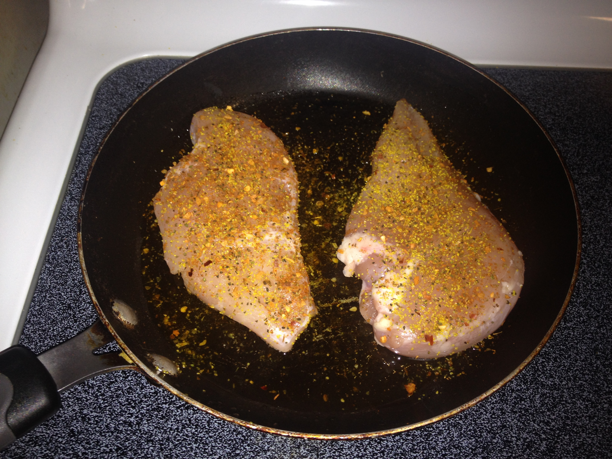
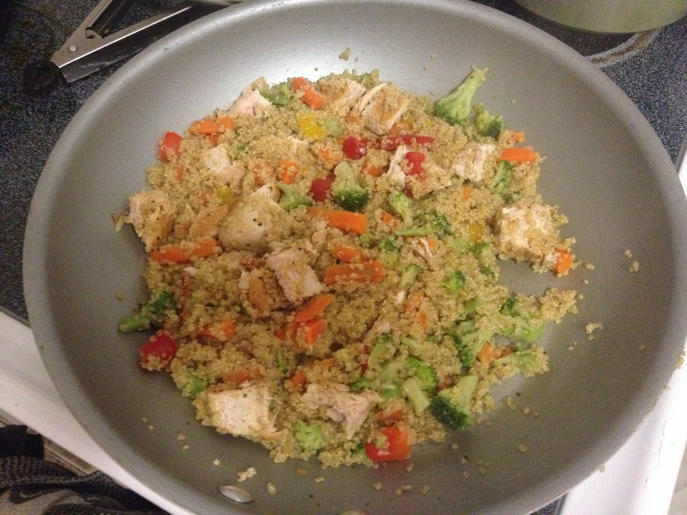

Chicken Stirfry Recipe
Summary:
This is one of my favourite dishes. It's a quick and easy meal that will leave you feeling full and energized for hours. Let's get started! First we are going to need our ingredients. You can click each ingredient in the list below to check it off your list.
- 1 Boneless Chicken Breast
- 1/2 Cup Organic Quinoa
- 2 Cups Frozen Mixed Vegetables
- Spices
- Spicy Thai Sauce
Ingredients:
Alright, time to put everything into action! Follow along with the steps listed below. You can keep track of your progress by clicking on each direction.
- Bring 1 cup of water to boil and add Quinoa. Cook until water is absorbed. 
- Steam 2 cups of frozen mixed vegetables. 
- Season and cook chicken breast. 
- Dice up chicken breast and combine with quinoa and vegetables in a pan. 
- Add sauce and spices to taste.
- Stir and simmer for 5 minutes.
- Dig in and enjoy!!.